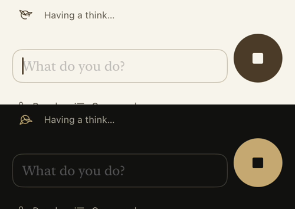

iOS Simulator (Rundale Phase 1 Small iPhone, iOS 26.5) with the fixture transcript. Not a physical iPhone.
Stop was a system red button whose icon took the app's near-black ink in light mode. It now uses Send's accent circle with a canvas-coloured icon.
